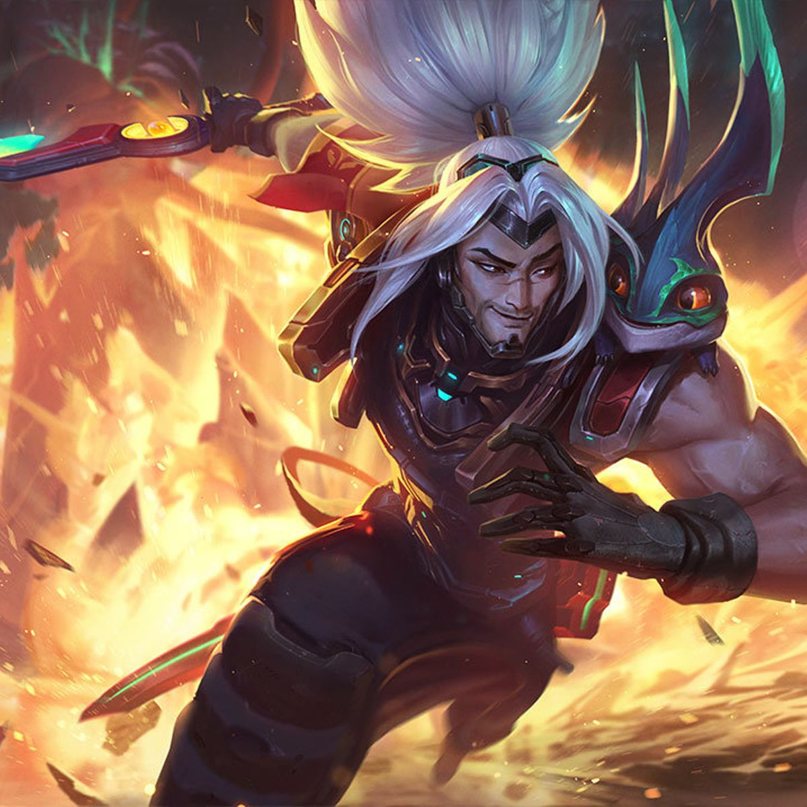
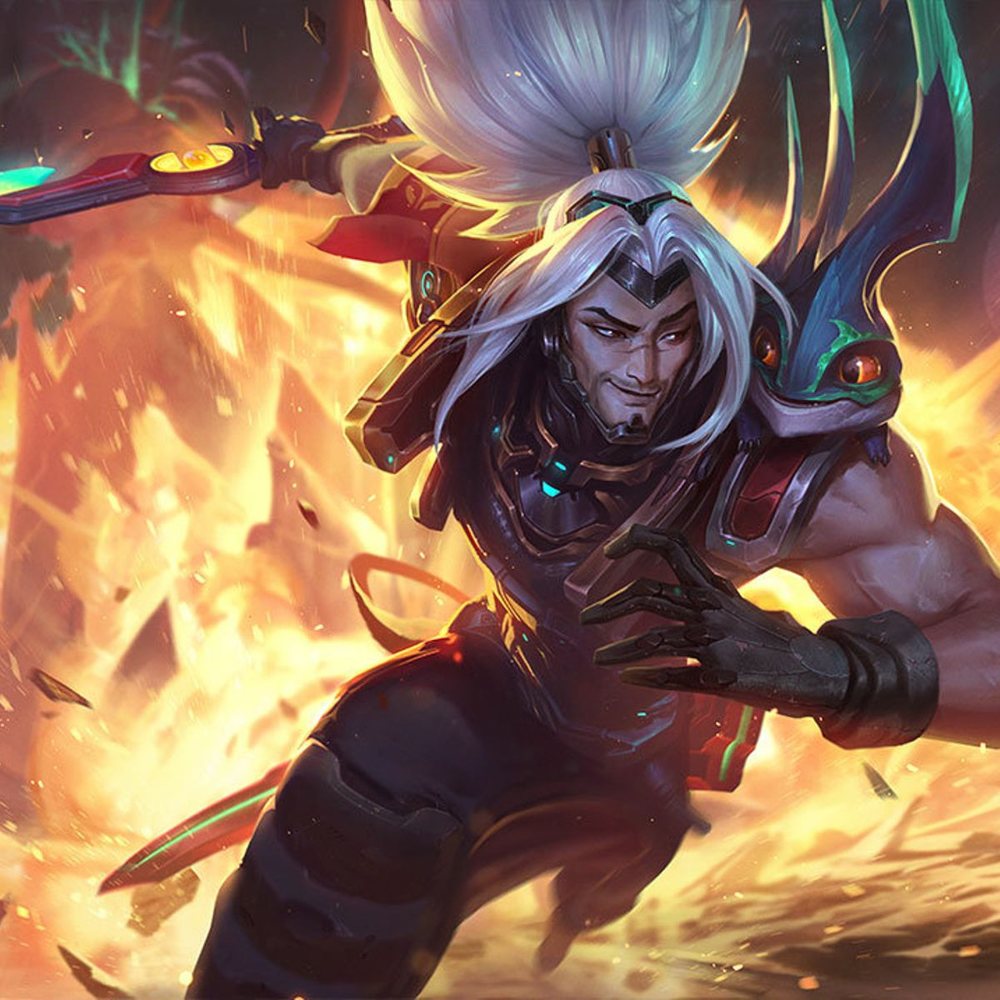

A Chance de Acerto Crítico de Yasuo é dobrada. Além disso,
Yasuo forma um escudo sempre que estiver em movimento. O
escudo é ativado quando ele recebe dano de um campeão ou monstro.
Tempestade de Aço
Avança para a frente, causando dano em todos os inimigos em
linha reta. Ao contato, Tempestade de Aço concede um
acúmulo de Tempestade Crescente por alguns segundos. Com
2 acúmulos, Tempestade de Aço desfere um tornado que
arremessa inimigos ao ar. Tempestade de Aço é tratada como
ataque básico e escala com as mesmas coisas.
Parede de Vento
Cria uma parede movediça que bloqueia todos os projéteis
inimigos por 4 segundos.
Espada Ágil
Avança e atravessa o inimigo alvo, causando Dano Mágico.
Cada conjuração aumenta o dano base de seu próximo
avanço, até um limite máximo. Não pode ser conjurada
novamente no mesmo inimigo por alguns segundos. Se
Tempestade de Aço for conjurada durante o avanço, o ataque
será circular.
Último Suspiro
Teletransporta-se para um Campeão inimigo arremessado ao
ar, causando Dano Físico e mantendo no ar todos os inimigos
da área que foram arremessados ao ar. Concede o máximo de
Fluxo, mas zera todos os acúmulos de Tempestade Crescente
Por um período moderado a seguir, os Acertos Críticos de
Yasuo recebem Penetração de Armadura adicional
significativa.

 
